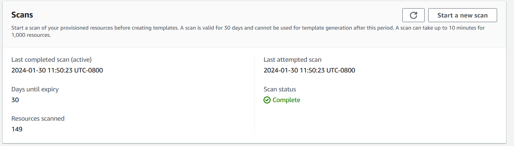
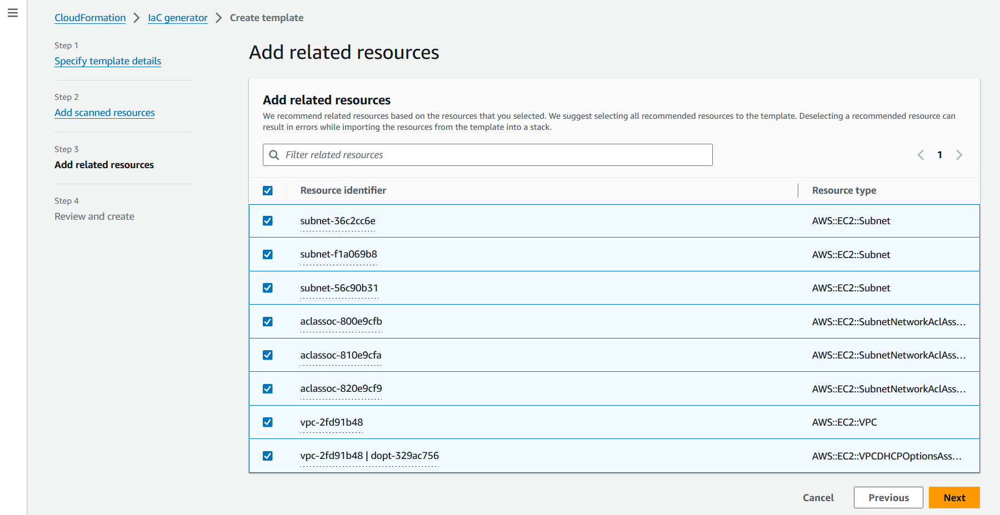

本文為英文版的機器翻譯版本，如內容有任何歧義或不一致之處，概以英文版為準。
為現有資源產生範本
使用 AWS CloudFormation IaC 生成器（基礎結構即代碼生成器），您可以使用尚未受管理的帳戶中佈建的 AWS 資源生成模板。 CloudFormation使用範本將資源匯入新帳戶 CloudFormation 或區域中的資源，或複製資源。
IaC 的生成過程包括幾個步驟：
-
開始掃描您的帳戶。
-
從頭開始建立範本，或使用現有堆疊的範本做為起點。
-
使用 [新增資源] 精靈，將掃描的資源和相關資源新增至範本。
-
將要管理的資源匯入 CloudFormation 為堆疊，或將其遷移到 AWS CDK 應用程式中。
IaC 產生器功能適用於所有商業區域，並支援許多常見的 AWS 資源類型。如需完整清單，請參閱資源類型支援。
主題
考量事項
您可以針對 AWS 您具有「讀取」權限的資源產生JSON或發佈至 CloudFormation 登錄的資源YAML範本。IaC 產生器功能的範本可靠且快速地建立雲端資源的模型，而不必依屬性描述資源屬性。
下表列出 IaC 產生功能的可用配額。
| 名稱 | 值 |
|---|---|
|
帳號掃描中可處理的資源數目上限 |
100000 |
|
每日掃描次數 (針對資源少於 10,000 的帳號) |
3 |
|
每日掃描次數 (針對擁有超過 10,000 個資源的帳號) |
1 |
|
每個帳戶產生的並行範本數 |
5 |
|
為一個樣版產生建立模型的並行資源數目。 |
5 |
|
可在一個範本中建立模型的資源總數 |
500 |
重要
IaC 產生器僅支援您所在地區的雲端控制 API 支援的資源。如需詳細資訊，請參閱雲端控制 API 使用者指南中的判斷資源類型是否支援雲端控制 API
生成模板（控制台）
本節說明如何使用 IaC 產生器功能建立範本、將資源新增至範本，以及如何將範本中的資源匯入堆疊。
若要使用 IaC 產生器開啟新範本
請登入 AWS Management Console 並開啟 AWS CloudFormation 主控台，網址為 https://console.aws.amazon.com/cloudformation
。 -
在導覽窗格中，選擇 IaC 產生器。

-
從「掃描」面板中，選擇「開始新掃描」。掃描會探索您帳戶中佈建的資源，以及資源之間的關係。您在該地區的帳戶中擁有的資源越多，掃描所需的時間就越長。
 -
從「範本」面板中，選擇「建立範本」。

-
選取「從新範本開始」。
-
在「範本名稱」面板中，輸入產生範本的名稱。
-
(選擇性) 設定您的刪除原則和更新取代原則。
-
選擇 [下一步] 將掃描的資源新增至範本。
-
若要將掃描的資源新增至範本
-
從掃描的資源清單中，瀏覽已掃描資源的清單。您可以依資源識別碼、資源類型或標籤來篩選資源。過濾器是相互包容的。

-
選取您要新增的一或多個資源。
重複步驟 1 和 2，直到您已將所有需要的資源新增至範本。

-
選擇下一步以結束 [新增已掃描的資源] 頁面，然後前往 [新增相關資源] 頁面。
-
檢閱建議的相關資源清單。相關資源 (例如 Amazon EC2 執行個體和安全群組) 是相互依存的，通常屬於相同的工作負載。選取您要包含在產生範本中的相關資源。
注意
我們建議您將所有相關資源添加到此模板中。
 -
檢閱範本詳細資料、掃描的資源和相關資源。選擇 「編輯」 以進行任何變更。
-
選擇「建立範本」以結束「複查並建立」頁面並建立範本。

結果：您已開始建立 CloudFormation 範本，並新增掃描和相關資源。
將要管理的資源匯入 CloudFormation 為堆疊
-
選擇匯入以堆疊，然後選擇 [下一步]。
-
在「指定堆疊詳細資料」頁面的「指定堆疊」面板上輸入堆疊的名稱。選擇下一步。
-
檢閱並輸入堆疊的參數。選擇下一步。
-
檢閱 [檢閱變更] 頁面上的選項，然後選擇 [下一步]。
-
在「檢閱與匯入」頁面上檢閱詳細資訊，然後選擇「匯入資源」。
結果：使用 IaC 生成器添加到模板的所有資源都導入到 CloudFormation 堆棧中。
產生範本 (AWS CLI)
本節說明如何掃描資源、建立範本、將資源新增至範本並進行更新，以及如何使用刪除範本 AWS CLI。
掃描您帳戶中的資源
-
若要掃描所選區域中帳戶中的資源，請使用start-resource-scan操作。
$aws cloudformation start-resource-scan該命令返回以下內容：
{ "ResourceScanId": \ "arn:aws:cloudformation:us-east-1:123456789012:resourceScan/0a699f15-489c-43ca-a3ef-3e6ecfa5da60" }
描述帳號資源掃描
-
若要描述掃描您帳戶中的資源，請使用此describe-resource-scan作業。
$aws cloudformation describe-resource-scan \ --resource-scan-id \ "arn:aws:cloudformation:us-east-1:123456789012:resourceScan/0a699f15-489c-43ca-a3ef-3e6ecfa5da60"該命令返回以下內容：
{ "ResourceScanId" : \ "arn:aws:cloudformation:us-east-1:123456789012:resourceScan/0a699f15-489c-43ca-a3ef-3e6ecfa5da60", "Status": "complete", "StartTime": "2023-08-21T03:10:38.485000+00:00", "EndTime": "2023-08-21T03:20:28.485000+00:00", "PercentageCompleted": 100.0, "ResourceTypes": [ "AWS::EKS::Cluster", "AWS::S3::Bucket" ], }
列出掃描中的所有資源
-
若要列出掃描中找到的資源，請使用此list-resource-scan-resources作業。回應包含一欄，指出是否已經 CloudFormation 管理資源。
$aws cloudformation list-resource-scan-resources \ --resource-scan-id \ "arn:aws:cloudformation:us-east-1:123456789012:resourceScan/0a699f15-489c-43ca-a3ef-3e6ecfa5da60" \ --resource-identifier exampleResource該命令返回以下內容：
{ "Resources": [ { "ResourceType": "AWS::EKS::Cluster", "ResourceIdentifier": { "ClusterName": "exampleResourceCluster" } }, "ManagedByStack": false { "ResourceType": "AWS::S3::Bucket", "ResourceIdentifier": { "BucketName": "exampleResourceBucket" }, "ManagedByStack": false } ] }在此範例中，假設來自
list-resource-scan-resources的輸出儲存到名為的 JSON 檔案中resources.json。
列出與掃描資源相關的所有資源
-
若要列出與已掃描資源相關的資源，請建立最多 100 個已掃描資源的批次，並針對每個批次使用 list-resource-scan-related- resource 作業。請注意，輸出可能包含清單中的重複資源。
回應包含一個資料行，指出是否已經 CloudFormation 管理資源。建議您將所有相關資源新增至範本。
$aws cloudformation list-resource-scan-related-resources \ --resource-scan-id \ "arn:aws:cloudformation:us-east-1:123456789012:resourceScan/0a699f15-489c-43ca-a3ef-3e6ecfa5da60" \ --resources file://resources.json該命令返回以下內容：
{ "RelatedResources": [ { "ResourceType": "AWS::EKS::Nodegroup", "ResourceIdentifier": { "NodegroupName": "exampleNodegroup" }, "ManagedByStack": false }, { "ResourceType": "AWS::IAM::Role", "ResourceIdentifier": { "RoleId": "arn:aws::iam::123456789012:role/S3Access" }, "ManagedByStack": false } ] }注意
資源的輸入列表長度不能超過 100。若要列出 100 多個資源的相關資源，請以 100 個批次執行作業，並合併結果。
假設從的輸出也
list-resource-scan-related-resources被添加到名為的 JSON 文件resources.json。
產生範本的步驟
-
若要產生沒有資源的新範本，請使用create-generated-template作業並指定範本名稱。
$aws cloudformation create-generated-template \ --generated-template-nameTemplateName該
create-generated-template命令返回以下內容。{ "Arn": \ "arn:aws:cloudformation:us-east-1:123456789012:generatedtemplate/7fc8512c-d8cb-4e02-b266-d39c48344e48", "Name": "TemplateName" }
若要使用資源更新產生的範本
-
若要更新新建立的範本，您可以指定要新增的資源清單。在這個例子中，我們使用該文件
resources.json。以下是適用於的 JSON 文字檔案resources.json：[ { "ResourceType": "AWS::EKS::Cluster", "LogicalResourceId":"Cluster", "ResourceIdentifier": { "ClusterName": "exampleResourceCluster" } }, { "ResourceType": "AWS::S3::Bucket", "LogicalResourceId":"Bucket", "ResourceIdentifier": { "BucketName": "exampleResourceBucket" } }, { "ResourceType": "AWS::EKS::Nodegroup", "LogicalResourceId":"Nodegroup", "ResourceIdentifier": { "NodegroupName": "exampleNodegroup" } }, { "ResourceType": "AWS::IAM::Role", "LogicalResourceId":"Role", "ResourceIdentifier": { "RoleId": "arn:aws::iam::123456789012:role/S3Access" } } ]若要更新範本，請使用update-generated-template作業、指定堆疊名稱，然後指定文字檔以將資源新增至範本。此選
--cloud-formation-template-configuration項不包含在內，因此UpdateReplacePolicy和DeletionPolicy原則預設會設Retain定為。$aws cloudformation update-generated-template \ --generated-template-nameTemplateName\ --add-resources file://resources.json該
update-generated-template命令返回以下內容。{ "Arn": "arn:aws:cloudformation:us-east-1:123456789012:template/equipment-sorter", "Name": "TemplateName" }
若要依堆疊名稱刪除指定的樣板
-
若要刪除產生的範本，請使用delete-generated-template作業並指定範本產生名稱或範本產生 ARN。
$aws cloudformation delete-generated-template \ --generated-template-nameTemplateName
產生和管理範本 AWS CDK
這 AWS Cloud Development Kit (AWS CDK) 是一個開放原始碼軟體開發架構，您可以使用常用的程式設計語言來開發、管理和部署 AWS CloudFormation 資源。
AWS CDK CLI 提供了與 IaC 發生器的集成。使用 AWS CDK CLI cdk migrate 命令生成 AWS CloudFormation 模板並創建包含您的資源的新 CDK 應用程序。然後，您可以使用 AWS CDK 來管理您的資源並將其部署到 AWS CloudFormation.
如需詳細資訊，請參閱AWS Cloud Development Kit (AWS CDK) 開發人員指南 AWS CDK中的「移轉至」。